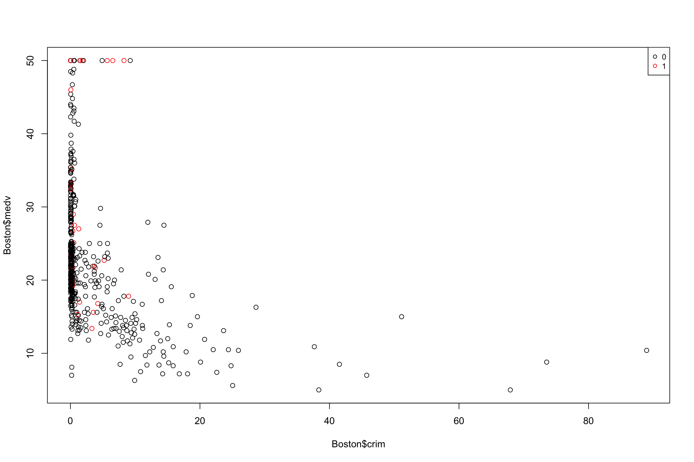
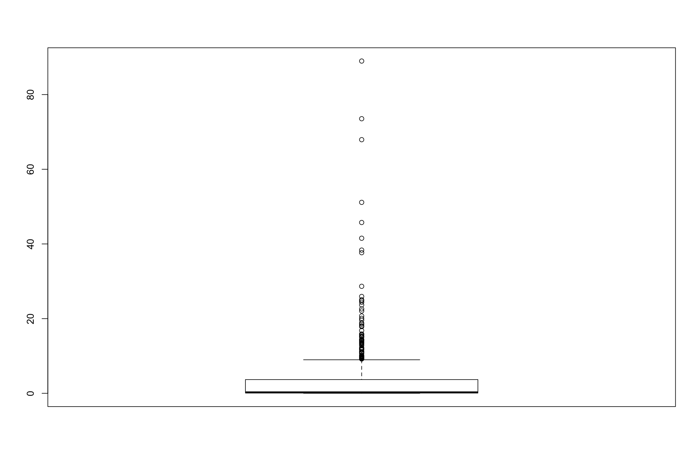
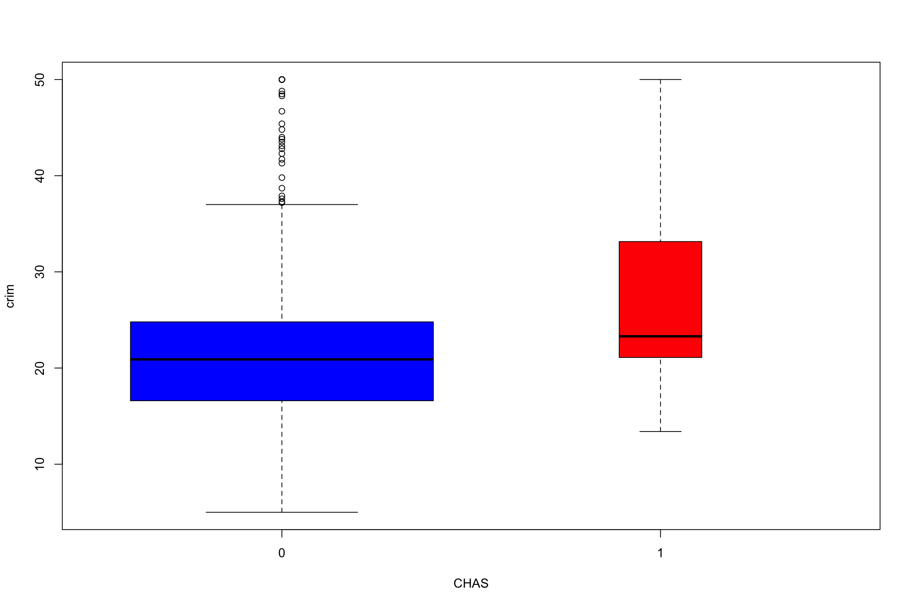
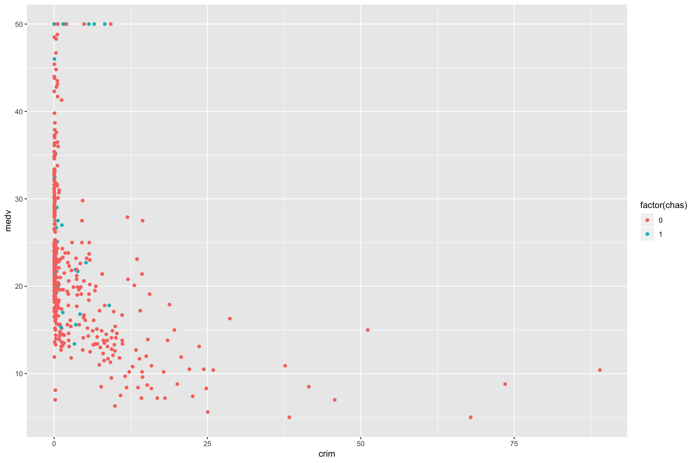
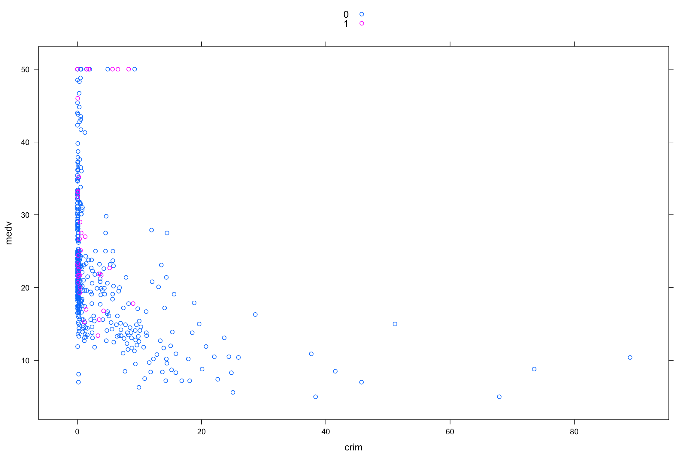
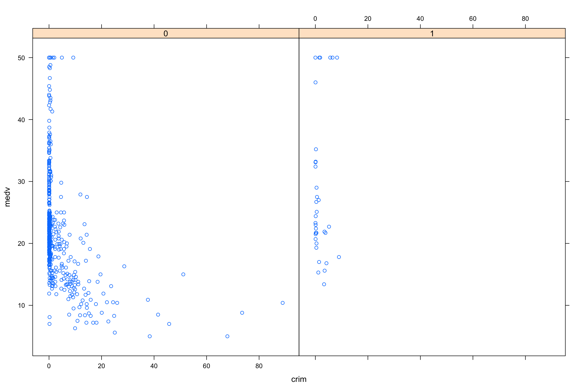
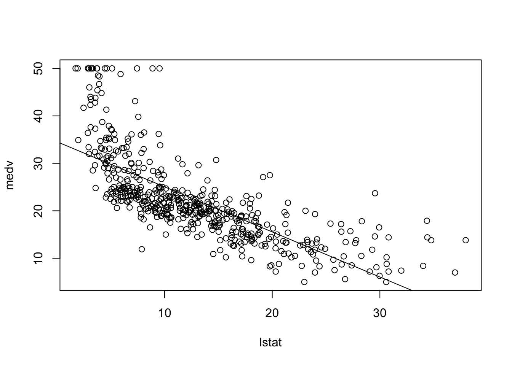
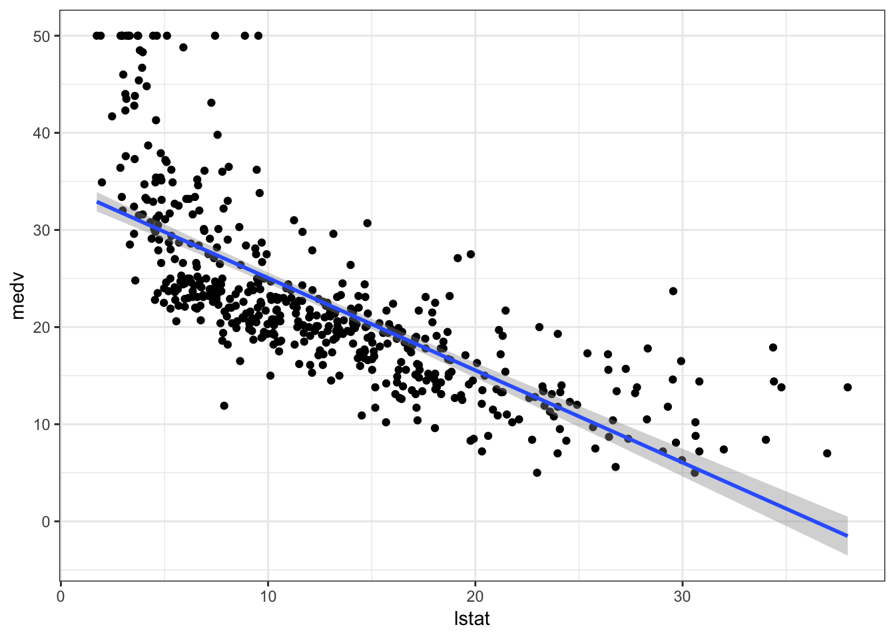

7 Ejemplo: Datos de precios de viviendas en Boston
La librería MASS contiene el conjunto de datos de Boston, que registra medv (valor mediano de la casa) de 506 vecindarios alrededor de Boston. Trataremos de predecir el medv usando 13 predictores tales como rm (número promedio de habitaciones por casa), age (edad promedio de las casas), y lstat (porcentaje de hogares con bajo estatus socioeconómico).
library(MASS)
data("Boston")
?Boston# Gráficos
plot(Boston$crim,Boston$medv,col=1+Boston$chas)
legend('topright', legend = levels(factor(Boston$chas)), col = 1:2, cex = 0.8, pch = 1)
plot(Boston[Boston$chas==0,c("crim","medv")],xlim=range(Boston$crim),ylim=range(Boston$medv),col="blue",cex=.35)
points(Boston[Boston$chas==1,c("crim","medv")],col="red",pch=2)
legend("topright",c("CHAS = 0", "CHAS = 1"), col=c(4,2),pch=c(1,2))
attach(Boston)
boxplot(crim)
boxplot(crim ~ factor(chas), data = Boston,xlab="CHAS",ylab="crim",col=c(4,2),varwidth=TRUE)
boxplot(medv ~ factor(chas), data = Boston,xlab="CHAS",ylab="crim",col=c(4,2),varwidth=TRUE)
library(ggplot2)
qplot(crim,medv,data=Boston, colour=factor(chas))
qplot(crim,medv,data=Boston, colour=tax)
library(lattice)
xyplot(medv~crim,groups=factor(chas),auto.key = TRUE)
xyplot(medv~crim|factor(chas),auto.key = TRUE)
names(Boston)## [1] "crim" "zn" "indus" "chas" "nox" "rm" "age"
## [8] "dis" "rad" "tax" "ptratio" "black" "lstat" "medv"str(Boston)## 'data.frame': 506 obs. of 14 variables:
## $ crim : num 0.00632 0.02731 0.02729 0.03237 0.06905 ...
## $ zn : num 18 0 0 0 0 0 12.5 12.5 12.5 12.5 ...
## $ indus : num 2.31 7.07 7.07 2.18 2.18 2.18 7.87 7.87 7.87 7.87 ...
## $ chas : int 0 0 0 0 0 0 0 0 0 0 ...
## $ nox : num 0.538 0.469 0.469 0.458 0.458 0.458 0.524 0.524 0.524 0.524 ...
## $ rm : num 6.58 6.42 7.18 7 7.15 ...
## $ age : num 65.2 78.9 61.1 45.8 54.2 58.7 66.6 96.1 100 85.9 ...
## $ dis : num 4.09 4.97 4.97 6.06 6.06 ...
## $ rad : int 1 2 2 3 3 3 5 5 5 5 ...
## $ tax : num 296 242 242 222 222 222 311 311 311 311 ...
## $ ptratio: num 15.3 17.8 17.8 18.7 18.7 18.7 15.2 15.2 15.2 15.2 ...
## $ black : num 397 397 393 395 397 ...
## $ lstat : num 4.98 9.14 4.03 2.94 5.33 ...
## $ medv : num 24 21.6 34.7 33.4 36.2 28.7 22.9 27.1 16.5 18.9 ...
Comenzaremos usando la función lm() para encajar un modelo de regresión lineal simple, con medv como respuesta y lstat como predictor. La sintaxis básica de lm() es lm(y~x,data), donde y es la respuesta, x es el predictor, y los datos son el conjunto de datos en el que se guardan estas dos variables.
lm.fit <- lm(medv ~ lstat, data=Boston)
Si escribimos lm.fit, se obtiene información básica sobre el modelo. Para información más detallada, usamos summary(lm.fit). Esto nos da valores de \(p\) y errores estándar para los coeficientes, así como la estadística \(R^2\) y el estadístico para el modelo.
lm.fit##
## Call:
## lm(formula = medv ~ lstat, data = Boston)
##
## Coefficients:
## (Intercept) lstat
## 34.55 -0.95summary(lm.fit)##
## Call:
## lm(formula = medv ~ lstat, data = Boston)
##
## Residuals:
## Min 1Q Median 3Q Max
## -15.168 -3.990 -1.318 2.034 24.500
##
## Coefficients:
## Estimate Std. Error t value Pr(>|t|)
## (Intercept) 34.55384 0.56263 61.41 <2e-16 ***
## lstat -0.95005 0.03873 -24.53 <2e-16 ***
## ---
## Signif. codes: 0 '***' 0.001 '**' 0.01 '*' 0.05 '.' 0.1 ' ' 1
##
## Residual standard error: 6.216 on 504 degrees of freedom
## Multiple R-squared: 0.5441, Adjusted R-squared: 0.5432
## F-statistic: 601.6 on 1 and 504 DF, p-value: < 2.2e-16
We can use the names() function in order to find out what other pieces of information are stored in lm.fit. Although we can extract these quantities by name - e.g. lm.fit$coefficients - it is safer to use the extractor functions like coef() to access them.
names(lm.fit)## [1] "coefficients" "residuals" "effects" "rank"
## [5] "fitted.values" "assign" "qr" "df.residual"
## [9] "xlevels" "call" "terms" "model"lm.fit$coefficients## (Intercept) lstat
## 34.5538409 -0.9500494lm.fit[[1]]## (Intercept) lstat
## 34.5538409 -0.9500494coef(lm.fit)## (Intercept) lstat
## 34.5538409 -0.9500494
In order to obtain a confidence interval for the coefficient estimates, we can use the confint() command.
confint(lm.fit, level = 0.95)## 2.5 % 97.5 %
## (Intercept) 33.448457 35.6592247
## lstat -1.026148 -0.8739505
Consider constructing a confidence interval for \(\beta_1\) using the information provided from the summary of lm.fit:
summary(lm.fit)$coefficients## Estimate Std. Error t value Pr(>|t|)
## (Intercept) 34.5538409 0.56262735 61.41515 3.743081e-236
## lstat -0.9500494 0.03873342 -24.52790 5.081103e-88
The predict() function can be used to produce confidence intervals and prediction intervals for the prediction of medv for a given value of lstat.
CI <- predict(object = lm.fit, newdata = data.frame(lstat = c(5, 10, 15)),
interval = "confidence")
CI## fit lwr upr
## 1 29.80359 29.00741 30.59978
## 2 25.05335 24.47413 25.63256
## 3 20.30310 19.73159 20.87461PI <- predict(object = lm.fit, newdata = data.frame(lstat = c(5, 10, 15)),
interval = "predict")
PI## fit lwr upr
## 1 29.80359 17.565675 42.04151
## 2 25.05335 12.827626 37.27907
## 3 20.30310 8.077742 32.52846NOTE:
A prediction interval is an interval associated with a random variable yet to be observed (forecasting).
A confidence interval is an interval associated with a parameter and is a frequentist concept.
For instance, the 95% confidence interval associated with a lstat value of \(10\) is \((24.474132, 25.6325627)\) and the 95% prediction interval is \((12.8276263, 37.2790683)\). As expected, the confidence and prediction intervals are centered around the same point (a predicted value of 25.0533473 for medv when lstat equals 10), but the latter are substantially wider.
We will now plot medv and lstat along with the least squares regression line using the plot() and abline() functions.
plot(medv ~ lstat, data = Boston)
abline(lm.fit)
# Or using ggplot2
library(ggplot2)
ggplot(data = Boston, aes(x = lstat, y = medv)) +
geom_point() +
geom_smooth(method = "lm") +
theme_bw()
There is some evidence of non-linearity in the relationship between lstat and medv. This question will be discussed later.
plot(medv ~ lstat, data = Boston,pch=15,cex=.65,col="lightgrey")
abline(lm.fit, lwd = 3, col = "red")
library(visreg) allows for visualization of regression functions
# install.packages("visreg")
library(visreg)
visreg(lm.fit)
pch options
plot(1:20, 1:20, pch = 1:20)